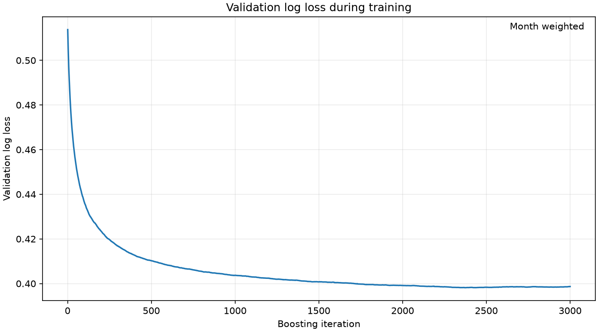
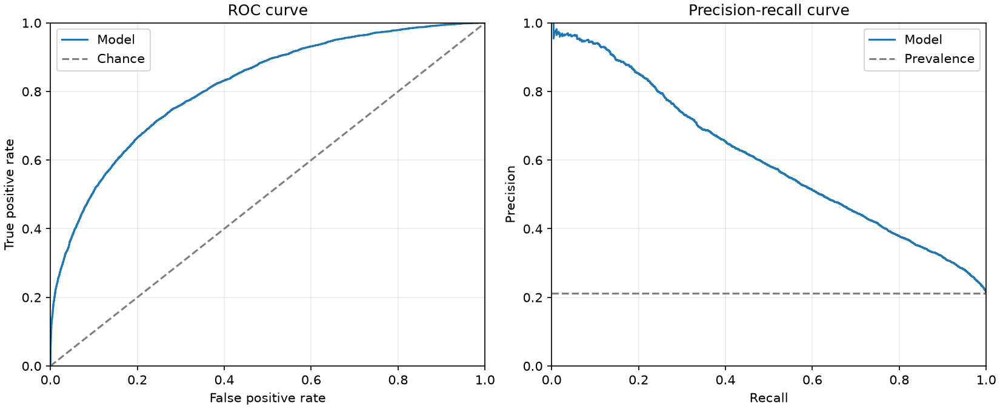
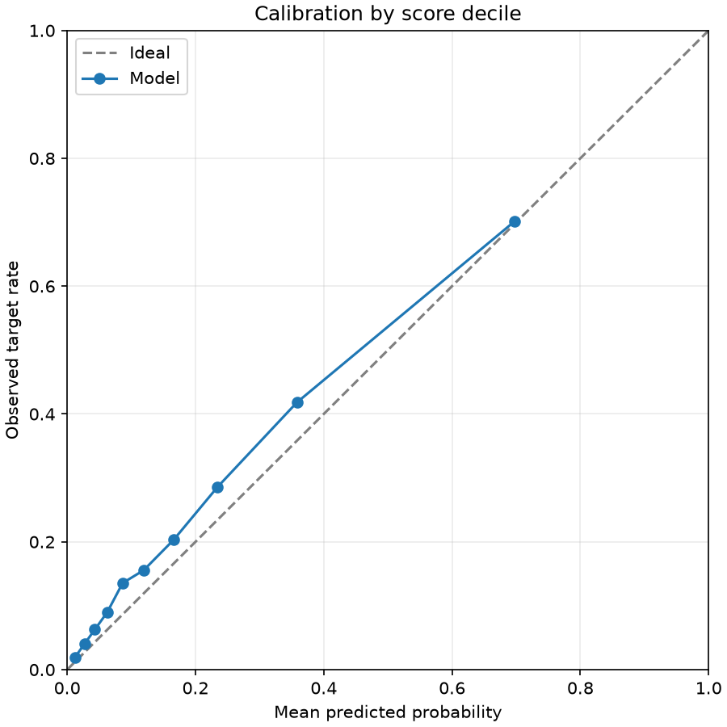
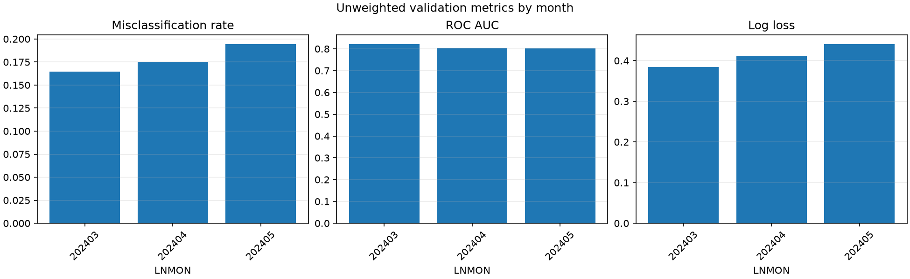
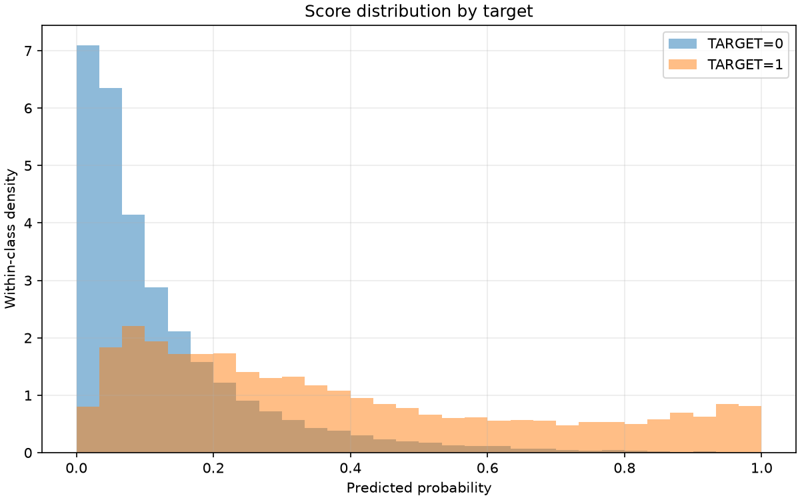

Final validation misclassification rate (overall_weighted, probability > 0.5): 0.170713
Validation months: 202403, 202404, 202405. The training-history figure reflects the model's original training validation protocol. The results describe the supplied undersampled data and are not independent test scores.
| scope | month | rows | target_1_rows | target_1_rate | misclassification_rate | roc_auc | average_precision | log_loss | brier_score |
|---|---|---|---|---|---|---|---|---|---|
| overall_unweighted | all | 41772 | 9173 | 0.21960 | 0.17864 | 0.80872 | 0.60183 | 0.41376 | 0.12996 |
| overall_weighted | all | 41772 | 9173 | 0.21173 | 0.17071 | 0.81432 | 0.60327 | 0.39867 | 0.12457 |
| monthly_unweighted | 202403 | 13093 | 2703 | 0.20645 | 0.16459 | 0.82224 | 0.61066 | 0.38493 | 0.11985 |
| monthly_unweighted | 202404 | 13966 | 2989 | 0.21402 | 0.17500 | 0.80385 | 0.58917 | 0.41199 | 0.12887 |
| monthly_unweighted | 202405 | 14713 | 3481 | 0.23659 | 0.19459 | 0.80274 | 0.60858 | 0.44110 | 0.14000 |
The first row is the metric recorded during training; the second row scores the selected validation protocol with the same metric.
| evaluation | protocol | months | month_weighted | metric | score |
|---|---|---|---|---|---|
| training_protocol | v2 | 202403,202404,202405 | True | logloss | 0.39867 |
| selected_protocol | v2 | 202403,202404,202405 | True | logloss | 0.39867 |





| decile | rows | weight_sum | mean_probability | observed_target_rate |
|---|---|---|---|---|
| 1 | 4178 | 0.09972 | 0.01205 | 0.01920 |
| 2 | 4177 | 0.10125 | 0.02701 | 0.04033 |
| 3 | 4177 | 0.09954 | 0.04313 | 0.06281 |
| 4 | 4177 | 0.09962 | 0.06235 | 0.08964 |
| 5 | 4177 | 0.09885 | 0.08644 | 0.13551 |
| 6 | 4178 | 0.10112 | 0.11921 | 0.15548 |
| 7 | 4177 | 0.10015 | 0.16581 | 0.20294 |
| 8 | 4177 | 0.09801 | 0.23448 | 0.28586 |
| 9 | 4177 | 0.10030 | 0.35818 | 0.41814 |
| 10 | 4177 | 0.10146 | 0.69738 | 0.70132 |
The final classification score uses 0.5; other thresholds are diagnostics only.
| threshold | weighted_true_positive | weighted_false_positive | weighted_true_negative | weighted_false_negative | misclassification_rate | precision | recall | specificity | predicted_positive_share |
|---|---|---|---|---|---|---|---|---|---|
| 0.10000 | 0.17752 | 0.32611 | 0.46215 | 0.03421 | 0.36033 | 0.35248 | 0.83841 | 0.58629 | 0.50363 |
| 0.20000 | 0.13961 | 0.15376 | 0.63451 | 0.07213 | 0.22588 | 0.47589 | 0.65936 | 0.80494 | 0.29336 |
| 0.30000 | 0.10828 | 0.07911 | 0.70915 | 0.10345 | 0.18256 | 0.57783 | 0.51142 | 0.89964 | 0.18740 |
| 0.40000 | 0.08302 | 0.04267 | 0.74560 | 0.12872 | 0.17139 | 0.66051 | 0.39208 | 0.94587 | 0.12568 |
| 0.50000 | 0.06481 | 0.02379 | 0.76448 | 0.14692 | 0.17071 | 0.73149 | 0.30610 | 0.96982 | 0.08860 |
| 0.60000 | 0.05158 | 0.01284 | 0.77543 | 0.16015 | 0.17299 | 0.80071 | 0.24360 | 0.98371 | 0.06442 |
| 0.70000 | 0.03970 | 0.00620 | 0.78206 | 0.17203 | 0.17823 | 0.86484 | 0.18752 | 0.99213 | 0.04591 |
| 0.80000 | 0.02870 | 0.00284 | 0.78543 | 0.18303 | 0.18587 | 0.91005 | 0.13555 | 0.99640 | 0.03154 |
| 0.90000 | 0.01623 | 0.00091 | 0.78736 | 0.19550 | 0.19641 | 0.94688 | 0.07667 | 0.99884 | 0.01714 |